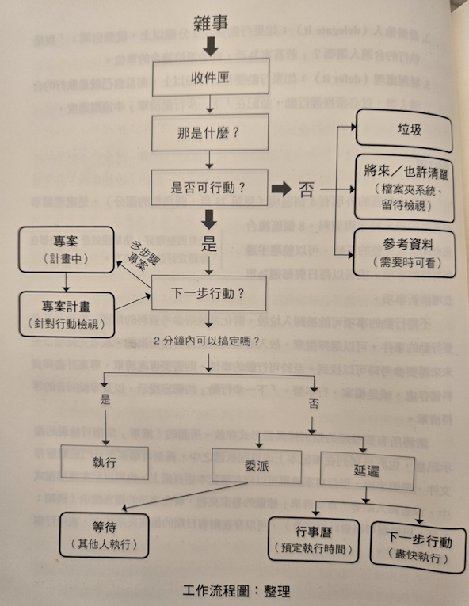

[筆記] 《搞定》六層管理架構與五階段計畫法
Contents
這篇文章整理了《搞定》(Getting Things Done, GTD) 書中的核心概念，包含如何透過五個階段有效規劃專案，以及六層高度管理架構來全面掌控工作與生活。透過這些方法，您可以降低心智負擔，提升專注力與效率。
整理，目的是降低認知的負擔，就是避免佔用思緒去想：「我在這件事情上要做些什麼事？」
選擇戰場，應該要大到能夠有所作為，同時又小到能變於取勝。
每日工作的三種類別：
- 處理預定義工作 (doing predefined work)：指執行事先已明確定義好的任務。
- 處理突發事件 (doing work as it shows up)：處理臨時出現、事先未規劃的事件。
- 界定工作 (defining work)：指定義或規劃當前未列在執行清單上的事項
基本的流程
第三章，做計畫的五個階段
1. 定義目標與原則（WHY）
這個階段要先思考「為什麼」要做這個專案。
- 目標：在過程一開始就要定義成功的樣貌，也就是怎樣才算達成目標。包括衡量標準、成功的條件、專屬重點的釐清，或是選項的擴充。
- 原則：用來協助判斷過程中的行為準則，避免陷入不必要的規則與反覆的判斷。它幫助我們知道什麼是比較好的做法，釐清正向行為的依據。
2. 想像預期結果的畫面（WHAT）
這個階段不再問「為什麼」，而是問「是什麼」。
- 更明確地描繪這件事成功後會是什麼樣子。
- 有助於專注在未來的成果與具體場景。
- 就像在撰寫電影劇本，試著幻想並具象化那個未來畫面。
- 當我們越清楚自己想要的結果，就越容易激發出強烈的熱情與行動力。
3. 腦力激盪（HOW）
當你清楚「為什麼」與「是什麼」之後，大腦會自然啟動差異補償機制。
- 預期結果與現狀之間的差距，會引發腦中自動產出各種點子。
- 想法可能瑣碎、隨機、平凡，甚至也可能非常絕妙。
- 要善用像是心智圖法、網狀圖法等工具，來捕捉這些突然出現的念頭。
- 腦力激盪的原則：
- 不批判
- 不質疑
- 不挑剔
- 不分析
- 重點是「先求量不求值」，整理與評估留到後面階段再做。
4. 整理
當想法累積得差不多，就要進入整理的階段。
- 利用工具幫助分類與結構化。
- 判斷哪些是重要的，開始建立架構。
- 常見的分類方式包括：
- 構成要件（組成部分）
- 順序（哪些先做哪些後做）
- 優先重點（哪些更關鍵或影響大）
- 當細節整理得差不多後，就可以準備進入實際行動階段。
5. 定義下一步行動
- 根據整理好的內容，為每個具體項目定義「下一步行動」。
- 所謂「下一步行動」，必須是明確且可執行的任務，而不是抽象的願望。
- 例如：
- 「打電話聯絡某人」
- 「上網查詢某項資料」
- 「寫一封 Email」
- 每一個行動越具體，就越能推動整個專案實際前進。
《搞定》六層高度管理架構筆記
1. 地面層（當前行動）
- 定義：所有具體的下一步行動（Next Actions）及等待中行動（Waiting For）。
- 重點：
- 確保行動清單完整、詳細。
- 使用外部工具（如行事曆、待辦清單）收集所有事項。
- 目標是清空大腦雜念，讓思維清晰，減少壓力。
- 建議：
- 至少保持50件下一步行動與等待中事項。
- 透過持續收集和整理，掌握即時優先順序。
2. 專案層（專案清單）
- 定義：需要兩個以上行動才能完成的任務或承諾。
- 重點：
- 維護一張完整且最新的專案清單。
- 專案清單反映週期性運作的工作狀態。
- 建議：
- 定期更新並審視專案，找出可立即執行的行動。
- 明確界定專案範圍，避免模糊不清。
3. 專注領域（責任範圍）
- 定義：長期持續的工作職責與生活責任，如職位、家庭、健康、社區等。
- 重點：
- 明確界定自己擔負的角色與責任範圍。
- 包含工作與私人生活兩大子清單。
- 反映較長期狀態，非每週調整。
- 建議：
- 每1~3個月檢視，啟動新專案或調整責任。
- 探索工作與生活中未被察覺的責任缺口。
4. 目標層（中長期目標）
- 定義：未來數月到數年希望達成的具體目標。
- 重點：
- 將專注領域具體化為明確目標。
- 幫助在工作與生活中有計畫地推進。
- 建議：
- 目標應具挑戰性並可衡量。
- 作為調整專案與行動的參考依據。
5. 願景層（人生方向與目的）
- 定義：個人使命、核心價值觀及長遠人生願景。
- 重點：
- 指引工作與生活的整體方向。
- 讓目標與專案與人生使命對齊。
- 建議：
- 定期反思個人願景，確保日常行動一致。
- 掌握願景可提升專注力與行動力。
6. 人生目的與原則層（最高層次）
- 定義：根本的人生哲學、價值與原則。
- 重點：
- 影響所有其他層級的管理與決策。
- 維持內心平衡與一致性。
- 建議：
- 深入探索人生意義與存在目的。
- 將生活與工作理念建立在穩固基礎上。
管理建議與實踐重點
- 由下往上管理：
- 先掌控當前行動（地面層），才能有效向上聚焦。
- 清空大腦雜念，釋放創造力與自由度。
- 循序漸進：
- 透過逐層管理，找到最適合當下的優先順序。
實務提示
- 這樣目前工作中所有成績的項目詳列清單，變能自動帶來更強大的專注力與一致性，以及對事物優先順序的判斷力。
結語
這本書主要在講述如何處理與搞定工作上的各種事務，提供了一個系統化的流程與步驟來協助我們更有效率地完成任務。
核心流程概念
書中提供了一個流程架構圖，其核心概念如下：
-
事情來了，先分類 首先，當有事情發生時，要先進行分類。 第一個判斷標準是：有沒有「下一步」。
- 若沒有下一步：
- 可能是垃圾
- 有潛力但尚未成熟的點子，應儲存在資料庫中
- 有用的參考資料，之後可能會用到
- 若有下一步，則進入下一階段的處理。
- 若沒有下一步：
-
有下一步 → 判斷處理方式
- 若這件事可以在兩分鐘內完成，就立刻執行。
- 若無法在兩分鐘內完成，則有兩個選擇：
- 排定時間自己完成：設定一個執行的時間，並記錄下來。
- 委託他人處理：視情況交辦給適合的人。
心得與反思
書中強調的「將待辦事項從腦中移除」的觀念讓我印象深刻。 這樣可以減少心智負擔，不會一直在腦中反覆思考。 實際實行後，確實能帶來幫助，讓思緒更清晰，也更能專注在當下的事情上。